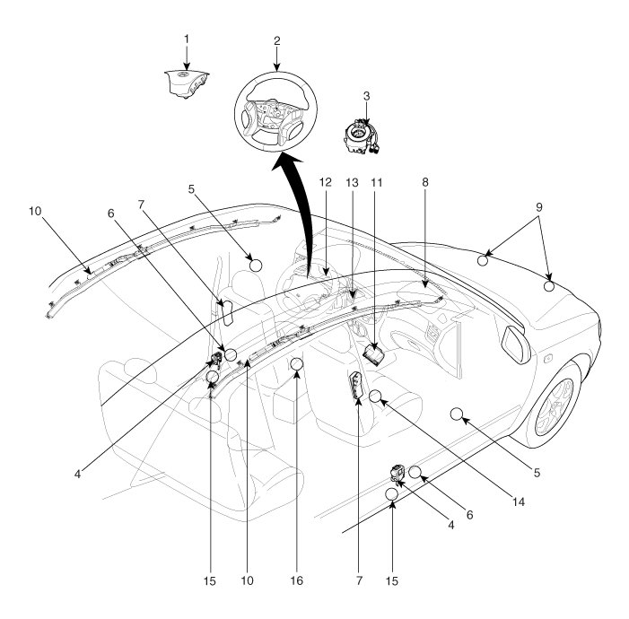
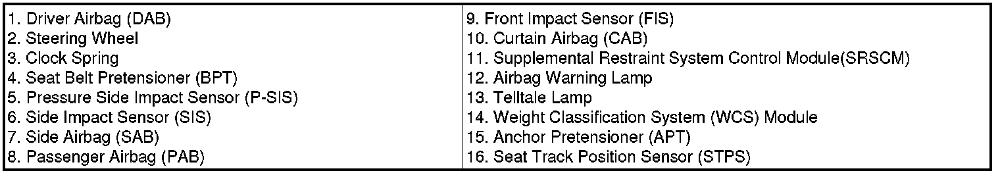
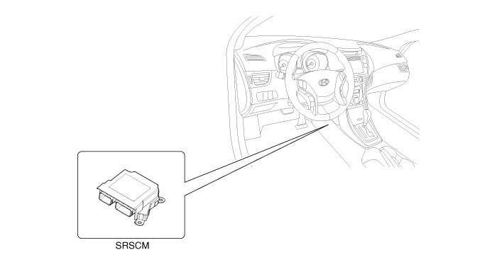
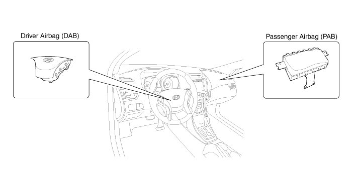
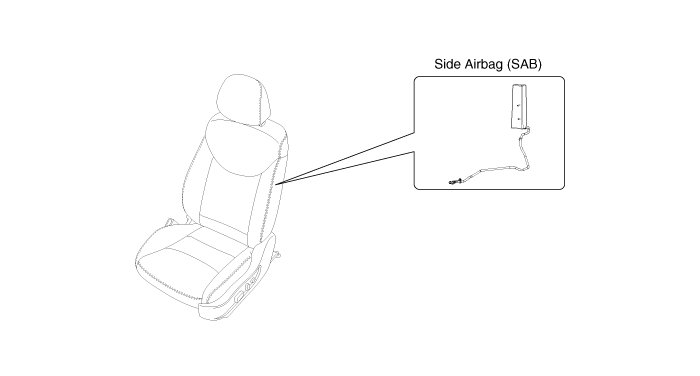
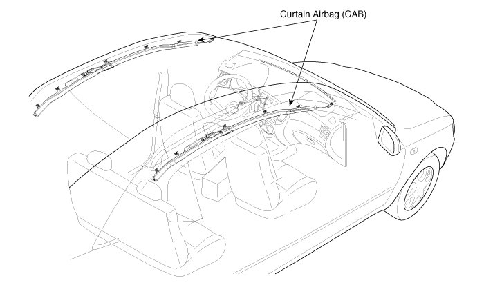
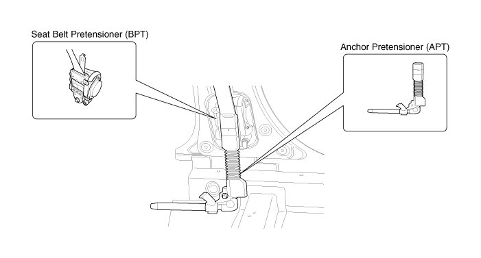
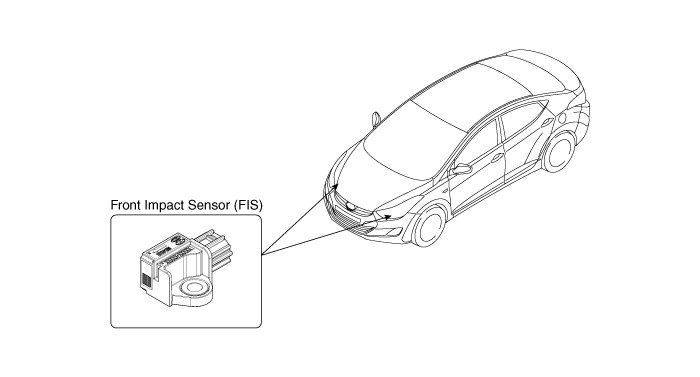
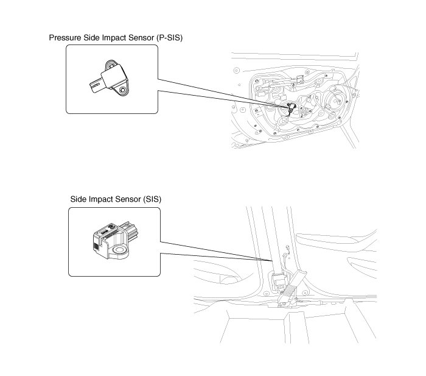

Components And Components Location
Components


Components Location
Supplemental Restraint System Control Module (SRSCM)

Driver Airbag (DAB) / Passenger Airbag (PAB)

Side Airbag (SAB)

Curtain Airbag (CAB)

Seat Belt Pretensioner (BPT) / Anchor Pretensioner(APT)

Front Impact Sensor (FIS)

Side Impact Sensor (SIS)
